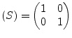

|
(9.19) |
A DC feed is an inductor with an infinite inductance. The MNA matrix entries of a DC feed correspond to an ideal short circuit during DC analysis:
|
(9.19) |
During AC simulation the DC feed is an open circuit. Thus, its MNA entries are all zero.
The scattering parameters writes as follows.
|  | (9.20) |
A DC feed is noise free. A model for transient simulation does not exist. It is common practice to model it as an inductor with finite inductance whose value is entered by the user.